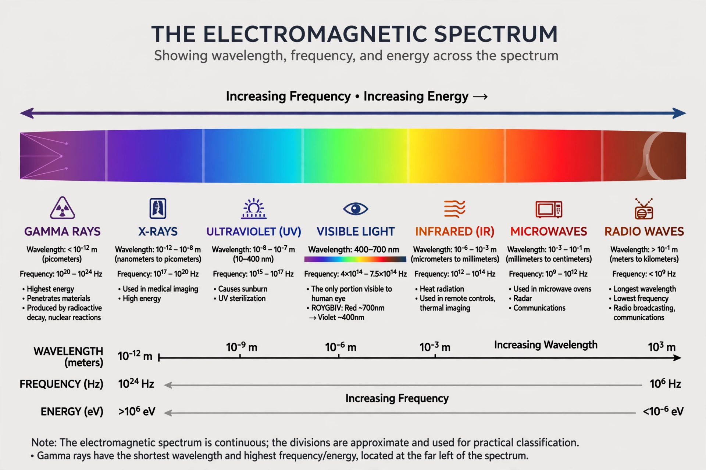

Gamma ray
A gamma ray, also known as gamma radiation (symbol γ), is a penetrating form of electromagnetic radiation arising from the radioactive decay of atomic nuclei. It consists of the shortest wavelength electromagnetic waves, typically shorter than those of X-rays. With frequencies above 30 exahertz (3×1019 Hz) and wavelengths less than 10 picometres, gamma ray photons have energies greater than about 100 keV.

| Gamma ray | |
|---|---|
| Discovered by | Paul Villard (1900) |
| Named by | Ernest Rutherford (1903) |
| Frequency | Above ~3×1019 Hz |
| Photon energy | Above ~100 keV |
Discovery
Gamma rays were first observed in 1900 by French chemist and physicist Paul Villard, while investigating radiation emitted by radium. Villard found a component that was not deflected by magnetic fields and was far more penetrating than the alpha and beta radiation then known. In 1903 Ernest Rutherford named this third component "gamma rays" after the third letter of the Greek alphabet, following his naming of alpha and beta rays.
Sources
Gamma rays are produced by nuclear transitions — radioactive decay, fission, and fusion — and by high-energy astronomical processes. Terrestrial sources include lightning strikes and terrestrial gamma-ray flashes. Extraterrestrial sources include solar flares, pulsars, supernova remnants, active galactic nuclei, and gamma-ray bursts, the most energetic events known in the universe since the Big Bang.
Properties and health effects
Gamma radiation is strongly ionising and poses a significant health hazard: it can damage DNA and tissue deep within the body, and shielding requires dense material such as lead or thick concrete. The same penetrating power makes gamma rays useful in medicine — in radiotherapy for cancer treatment and in gamma-camera imaging — and in industry for radiography, gauging, and the sterilisation of medical equipment and food. The isotope cobalt-60 is a common industrial and medical source.